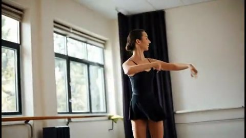
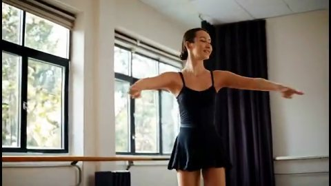
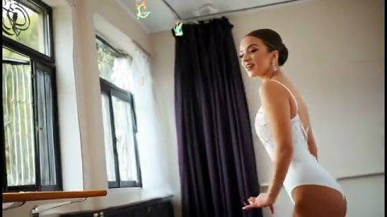
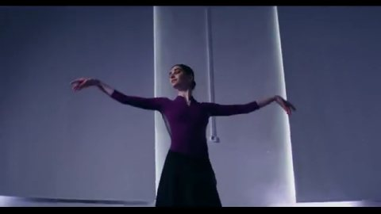

ReKV：保留了画面，却答成了另一个时刻的状态
问题在清洁烤箱的特写出现之前，第一个厨房镜头结束时，烤箱门是开着还是关着？
历史片段 A
- 正确答案
- 关着
- ReKV
- 开着
历史片段 B
- 正确答案
- 开着
- ReKV
- 关着
ReKV 每 2 秒采样一次，并在作答时获得每段历史的全部 8 张采样帧，其中包括第 0 秒和第 4 秒的画面。虽然它对两段历史给出了不同答案，却都答成了初始状态，而不是问题指定时刻的状态，恰好将两个视频的正确答案答反。
模型答对了有关先前事件的问题，并不代表它用到了先前的视频内容。TwinPast 将两段视频配成一对：结尾画面相同，问题也相同，但此前发生的事件不同，正确答案也随之不同。只有同一对中的两段视频都答对，才计为一对正确。
历史片段 A 舞者身穿黑色连衣裙





历史片段 B 舞者身穿白色连体舞蹈服
相同的近期画面 两段视频中的这部分画面完全相同



两段视频最后的 30 秒。这部分画面中看不到舞者此前的服装。
两段视频的问题和选项相同
在此前的舞蹈室场景中，舞者穿着什么？
PairAcc同一对中的两段视频都答对，才计为一对正确。
问题
32%
在 OVO-Bench 和 StreamingBench 抽样的历史理解问题中，32% 仅凭最后三至四帧就能回答。两个模型仅看问题文本，也分别能答对约 41% 和 50%。这些基准上的准确率并不能证明模型使用了历史信息。
评测基准
91% → 19%
遮挡标注的历史证据后，PairAcc 从最高约 91% 降至不超过 19%；在其他位置遮挡相同面积，变化却不超过 3.4 个百分点。这表明，要同时答对一对视频，需要用到这些历史证据。
发现
49%
最强流式系统仅能答对约 49% 的视频对。接收完整视频的通用多模态大模型可答对 67–91%，人类可答对约 88%。流式系统答错时，最常见的情况是对先前内容不同的两段视频给出相同答案。
流式视频基准上的高准确率，并不能证明模型使用了先前的视觉信息。我们分析了 OVO-Bench 和 StreamingBench，发现抽样的历史理解问题中，32% 仅凭近期画面就能回答；仅提供问题和选项，也能答对不少问题。为此，我们提出 TwinPast，一个包含 350 对经人工审核的视频、覆盖五类历史理解任务的评测基准。同一对中的两段视频具有相同的近期画面、问题和选项顺序，但先前发生的事件不同，因此正确答案也不同。每段视频独立评测，PairAcc 要求同一对中的两个答案都正确；如果答案完全由共同输入决定，就无法同时答对。遮挡标注的关键证据后，PairAcc 从最高约 91% 降至不超过 19%；在其他位置遮挡相同面积，变化则不超过 3.4 个百分点。最强流式系统的 PairAcc 为 49%，而接收完整视频的通用多模态大模型达到 67–91%，说明流式系统仍有很大的提升空间。流式系统的主要失败表现，是对不同的历史片段给出相同答案：它们在至多 57% 的视频对上给出两个不同的有效答案，通用多模态大模型的这一比例则为 79–94%。案例分析进一步表明，即使决定答案的证据在最终提问时仍然可用，模型也可能答错。
我们分析了 OVO-Bench 和 StreamingBench，发现模型即使没有看过先前的事件，也有两种途径答对相关问题。
32%
人工检查发现，在从历史任务中抽样的 400 道问题中，有 128 道仅凭最后三至四帧就能找到参考答案的依据。
40.83% 与 49.60%
仅提供问题和选项，Qwen3-VL-8B 与 DeepSeek-Flash 在 4,276 道基准问题上的准确率就分别达到了 40.83% 和 49.60%。
每对视频中，先前发生的事件不同，其余条件保持一致。
每对样例包含两段视频： VA = P ⊕ HA ⊕ R 与 VB = P ⊕ HB ⊕ R。其中，P 是可选的共同开头（前缀），H 是两段不同的历史片段，R 是逐帧相同的结尾片段（共享后缀）。两段视频的问题、选项及其顺序、提问时刻均相同，但正确答案不同。每段视频分别独立评测。
PairAcc （配对准确率）表示同一对中两个答案都正确的视频对占比。 Acc. 则分别统计每段视频的答案是否正确。因此，对于只有两个选项的视频对，始终选择同一个选项，也可以达到 50% 的单视频准确率，但 PairAcc 仍为 0%。
相同不同相同不同
两段视频回答同一个问题
这里展示了 350 对视频中的 8 对，均保留完整时长。点击进度条下方的两个标签，可分别跳到决定答案的历史证据，以及共享后缀的起点。
我们评测了 34 种模型与输入配置。评测结果表明，这些视频对可以被正确解答，流式系统仍有很大的提升空间。
最强流式系统
49.14%
Qwen3.8-Omni-Flash-Realtime。11 个流式系统的 PairAcc 范围为 0.29%–49.14%。
通用多模态大模型
66.57–91.43%
9 个模型，均通过各自原生的视频 API 接收完整视频。
人类表现
88.29%
允许回看视频时，人类的 PairAcc 为 88.29%；只看一遍、到提问时才看到问题时，则为 65.43%。
流式系统在至多 57.14% 的视频对上给出两个不同的有效答案，通用模型的这一比例为 78.57–93.71%。一旦给出了不同答案，流式系统往往能同时答对：11 个系统中有 9 个，在这部分视频对上两个答案均正确的比例为 69.17–86.00%。
同一模型系列内部也有类似现象。Qwen3.8-Omni-Flash 实时版本的 PairAcc 比非实时版本低 33.72 个百分点，主要原因是实时版本较少对两段视频给出不同答案，而不是在给出不同答案后更容易答错。
Qwen3.8-Omni-Flash 实时版本非实时版本
我们从各任务中均衡抽取 175 对视频，遮挡历史画面中已标注的、决定答案的区域；作为对照，也在这些帧的其他位置遮挡相同面积。在 23 种配置中，遮挡非关键区域使 PairAcc 变化不超过 3.43 个百分点，而遮挡关键区域后，PairAcc 最高仅为 18.86%。
这说明，要同时答对一对视频，需要用到特定的历史证据，仅仅增加输入长度还不够。
| 模型 | 原始视频 | 遮挡非关键区域 | 遮挡关键区域 |
|---|---|---|---|
| Qwen3.8-Omni-Flash | 82.86 | 81.71 | 12.00 |
| Qwen3.8-Omni-Flash-Realtime | 47.43 | 49.14 | 2.86 |
| Qwen3-VL-8B，离线 | 33.71 | 32.00 | 1.14 |
| StreamForest | 33.14 | 32.57 | 4.57 |
| ReKV | 25.14 | 24.57 | 1.14 |
| OneStreamer | 21.14 | 24.00 | 0.00 |
我们还在全部 350 对视频上进行了两组实验，只改变决定答案的证据与提问之间的时间间隔。去掉共享后缀，就在历史片段结束后立即提问；在两段视频中插入相同的、不含语义内容的中性片段（30–600 秒），则会延长这一间隔。
离线参考模型将所有采样帧都保留在上下文中，PairAcc 始终保持在 41.14%–46.29%，说明拉长时间间隔后，这些视频对仍可被正确解答。各流式系统的表现则以不同方式下降：ReKV 和 StreamForest 逐步下降；OneStreamer 仅插入 30 秒片段便出现下降，之后趋于平稳；MiniCPM-o 4.5 在插入时长不超过一分钟时基本稳定，随后降至 9.14%。
对于需要压缩或筛选历史记忆的系统，去掉共享后缀带来的提升最明显：OneStreamer 的 PairAcc 提升 26.00 个百分点，StreamForest 提升 11.71 个百分点，ReKV 提升 5.71 个百分点；离线参考模型则仅提升 2.57 个百分点。
证据与提问的时间间隔如何影响 PairAcc
各任务列与 Acc. 统计单个答案的正确率；PairAcc 则要求同一对中的两个答案都正确。 D：得到两个不同有效答案的视频对占比。 C：在答案不同的视频对中，两个答案都正确的比例。因此，PairAcc = D × C。 R：将两个视频的正确答案恰好答反的视频对占比。 S = PairAcc − R。 下载 CSV。
| 系统 / 模型 | AIR | HSR | EOR | HAC | MEI | Acc. | PairAcc | D | C | R | S |
|---|
对两段视频给出相同答案，可能是因为模型在提问前丢失了区分二者的证据。但这并非唯一的失败原因：在下面两个案例中，决定答案的证据在最终作答时仍然可用，回答却与证据矛盾。
问题在清洁烤箱的特写出现之前，第一个厨房镜头结束时，烤箱门是开着还是关着？
历史片段 A
历史片段 B
ReKV 每 2 秒采样一次，并在作答时获得每段历史的全部 8 张采样帧，其中包括第 0 秒和第 4 秒的画面。虽然它对两段历史给出了不同答案，却都答成了初始状态，而不是问题指定时刻的状态，恰好将两个视频的正确答案答反。
问题在深色桌面上的打包场景中，哪个物品先被放入高纸箱：黑色发刷，还是透明的扳机式喷雾瓶？
历史片段 A
最终提问时，OneStreamer 保存的文本记忆（中文译文）
2–7 秒“这个人拿起一个贴有蓝色标签的白色小罐、一支白色走珠除臭剂，以及一个带白色泵头的透明喷雾瓶，依次放进箱子。”
7–10 秒“这个人从桌上拿起一把灰色手柄的黑色发刷，放进箱子。”
文本记忆正确记录了两件物品放入箱子的先后顺序，回答却与之相反。仅仅保留证据还不够，模型作答时还需要把证据与问题询问的时间关系对应起来。
AURA · 多事件整合
有 46 对多事件视频的选项同时涉及两个二元事实。在其中 13 对里，两个事实都发生了变化，但 AURA 只识别出其中一个的变化，对另一个仍给出相同判断。
VideoLLM-online · 动作计数
当被问到场景切换前完成了多少次拍手时，无论视频中拍了六次还是九次，模型都回答“你在拍手”。它说出了动作名称，却没有报告次数。
@misc{yang2026twinpastbenchmarkinghistoricalevidence,
title={TwinPast: Benchmarking Historical Evidence Use in Streaming Video Understanding with Evidence Contrastive Video Pairs},
author={Haotian Yang and Yong Chen and Cheng Peng and Haobo Wang and Zhongle Xie and Xuanru Li and Gang Chen},
year={2026},
eprint={2610.41983},
archivePrefix={arXiv},
primaryClass={cs.CV},
url={https://arxiv.org/abs/2610.41983},
}